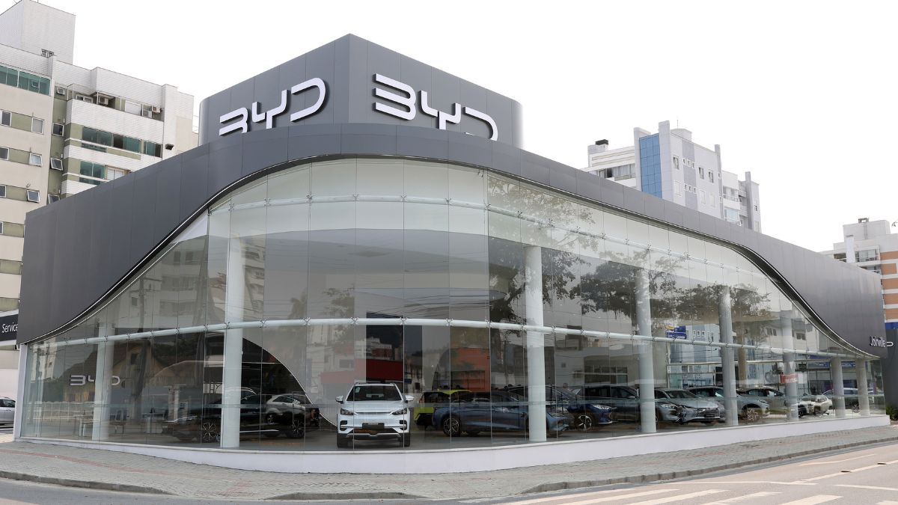

BLOG SUPERCARROS
Confira as últimas noticias

Carro custo beneficio 2024
O mercado automotivo nacional não tem tantas opções de carros novos e usados como em outros países, mas a diversidade de modelos é maior a cada dia.
Entre as alternativas que você pode ter na garagem, citando carros zero km ou veículos de segunda mão, existem aqueles que tem um bom custo-benefício, seja pelo preço mais chamativo quando novo ou com conteúdo e motorização mais consistente.
